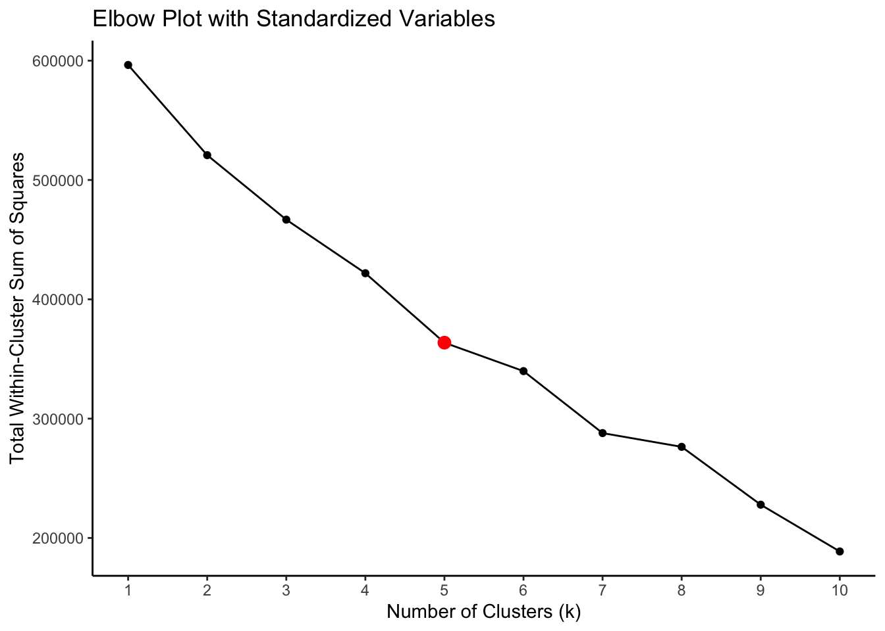

Grouping Games Through Clustering
To address the question about which video games are similar (and how), I wanted to use unsupervised learning techniques. I will use k-means clustering as a way to assign video games to distinct groups, which may uncover similarities between the games.
For this analysis, I chose 9 quantitative variables to cluster the games by: the age required to play, the price, the number of DLCs (Downloadable Content), the metacritic score, the number of game achievements, the number of recommendations, the median playtime since the game’s release, the highest CCU (Concurrent User) count, and the net review ratio statistic. Since the variables on different scales (e.g. 0 to 100, -1 to 1, and 0 to 1,000,000+), it is important to standardize the variables (i.e. level the playing field). This way, the locations of the centroids will not be dominated by its relation to one variable over another when using k-means clustering.
To determine the optimal number of clusters, I first consulted an elbow plot. We want to look at when the within-cluster variance is relatively small, without creating too many clusters. However, with too many clusters, it may become too difficult to interpret the results or for the results to hold any significant meaning. Therefore, based on the elbow plot, 5 clusters appears to be reasonably optimal as it is where the graph “bends” without containing too many clusters.
| Cluster | Required Age | Price | DLC Count | Metacritic Score | Achievements | Recommendations | Median Playtime Forever | Peak CCU | Net Review Ratio |
|---|---|---|---|---|---|---|---|---|---|
| 1 | -0.141 | -0.357 | 0.201 | -0.239 | 23.643 | -0.037 | -0.009 | -0.025 | -0.414 |
| 2 | -0.140 | -0.012 | -0.014 | -0.239 | -0.036 | -0.038 | -0.018 | -0.014 | 0.478 |
| 3 | 6.931 | 0.922 | 0.129 | 1.387 | 0.026 | 1.195 | 0.163 | 0.677 | -0.087 |
| 4 | -0.140 | -0.221 | -0.019 | -0.235 | -0.062 | -0.058 | -0.043 | -0.024 | -1.486 |
| 5 | -0.141 | 0.845 | 0.238 | 4.017 | 0.044 | 0.341 | 0.404 | 0.039 | 0.151 |
It appears that our clusters are grouped by the following characteristics:
Higher DLC counts, extremely high number of achievements, and lower ratings.
Generally average values across the variables except for lower metacritic scores and high ratings.
Highest age requirements, highest prices, higher metacritic scores, high number of recommendations, and the highest CCU counts.
Lowest median playtimes and lowest ratings.
Higher prices, highest DLC counts, highest metacritic scores, and highest median playtimes.
Therefore, Cluster 1 contains games that may cater towards completionist gamers, although lacking in ratings. Cluster 2 contains games that are not approved by metacritics but supported and favored by players. Cluster 3 contains games that are catered towards older audiences and also widely shared. Cluster 4 contains games that plain out suck; players do not play these games for long and give bad ratings. Finally, Cluster 5 contains expensive games with a lot of content for committed players.
| Name | Release Date | Required Age | Price | DLC Count | Metacritic Score | Achievements | Recommendations | Median Playtime Forever | Peak CCU | Net Review Ratio | Cluster |
|---|---|---|---|---|---|---|---|---|---|---|---|
| Portal 2 | Apr 18, 2011 | 0 | 9.99 | 1 | 95 | 51 | 243925 | 514 | 2693 | 0.976 | 5 |
| Sid Meier's Civilization® IV | Oct 25, 2006 | 0 | 19.99 | 0 | 94 | 0 | 1991 | 233 | 785 | 0.855 | 5 |
| Tetris® Effect: Connected | Aug 17, 2021 | 0 | 39.99 | 2 | 93 | 43 | 3699 | 2059 | 170 | 0.920 | 5 |
| Hades | Sep 17, 2020 | 0 | 24.99 | 1 | 93 | 49 | 178350 | 1330 | 6396 | 0.972 | 5 |
| Beat Saber | May 21, 2019 | 0 | 29.99 | 71 | 93 | 26 | 58334 | 754 | 1364 | 0.920 | 5 |
| Dwarf Fortress | Dec 6, 2022 | 0 | 29.99 | 1 | 93 | 0 | 10086 | 548 | 28026 | 0.934 | 5 |
From the table, we can see that Portal 2, Sid Meier’s Civilization® IV, and Tetris Effect: Connected are similar as they have high Metacritic Scores and high median playtimes.